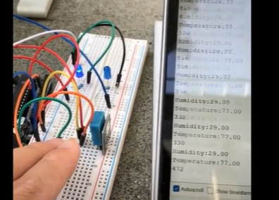
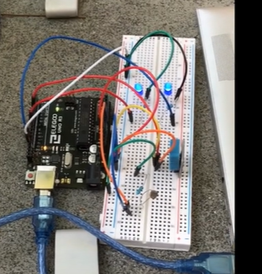

I measured temperature and humidity with Arduino project that had breadboard, LEDs, and resistors.
Every 1000 ticks (1 second), the machine does 2 tasks:
The photoresistor checks the brightness of its surroundings and returns a number. The number is between 0 and 1024, where 0 is maximum brightness and 1024 is minimum brightness.
if number is less than 600:
1 LED light will turn on
if number is less than 400:
a second LED will also turn on (2 LED lights will be on)

1 LED is on. The LED brightness is less than 600.
2 LEDs are on. The LED brightness is less than 400. The brightness is higher than the brightness in the previous picture.
In the Arduino system, I used Serial.print() statements to make sure the functions worked as intended.The serial monitor printed out the brightness, temperature, and humidity.